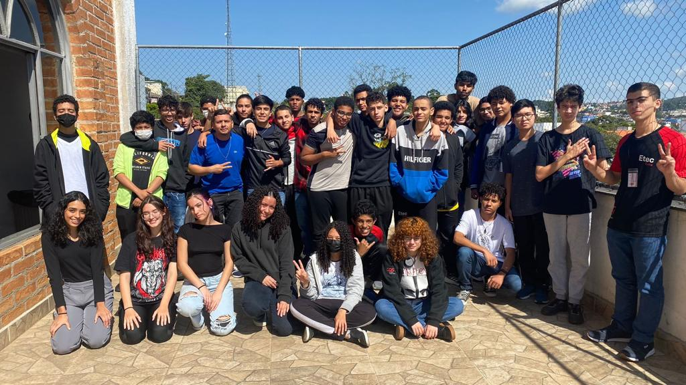

|  |
| Amizade é paz para alguns, lar para outros Amigo é aquele que sempre está lá por você, seja na alegria, na tristeza, em dias ensolarados ou dias nublados. É aquele que apesar de tudo, sempre faz de tudo por você. Assiste algo que nunca ouviu falar, que ao ver algo lembra de você, que ouve sua música favorita. A amizade é linda e essencial, na escola sempre encontramos nosso grupo ideal. Amizades verdadeiras podem ser encontradas na sua sala, na sua escola, em todo lugar. Amizade real sempre estará contigo, pra sempre. A sala inteira com seu lugar, cada um ter seu par, trio, quarteto. Mas mesmo assim, sempre dispostos a tentar conhecer novas pessoas, novas amizades, novos laços. Na escola você tem sempre alguém para encontrar, sempre alguém que vai te acompanhar. Aquela pessoa que você sabe que a conexão não acaba, que o carinho é mútuo, a confiança e apoio é indiscutível. Amizade é algo incrível e que a cada dia precisa ser cada vez mais construído. |